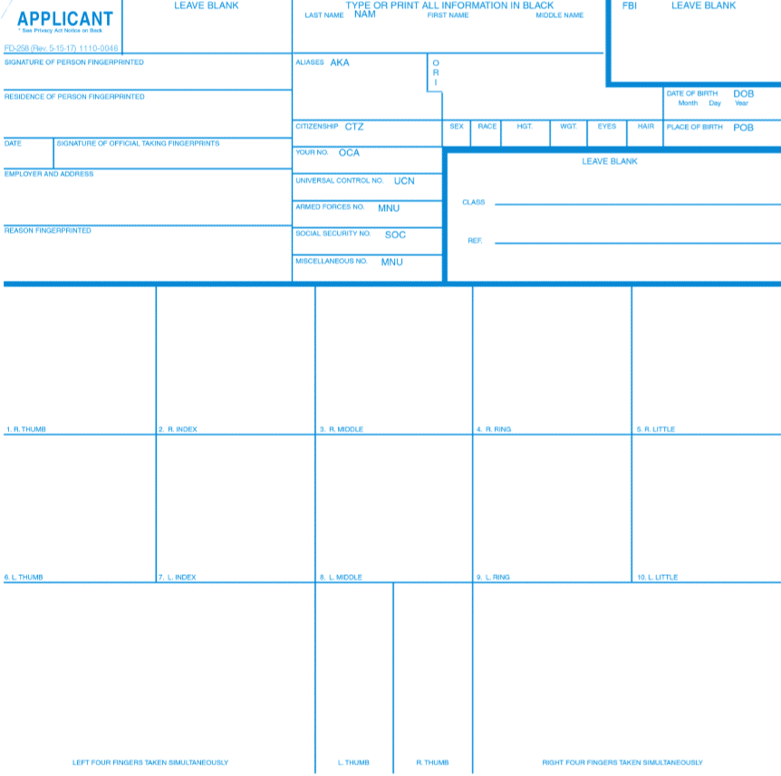

FBI Background Check Services
Live Scan Fingerprinting
Fingerprint capture services for authorized employment, licensing, permits and other purposes.
Fingerprint Cards
Fingerprint-card services when a requesting organization requires a card format.

FBI Background Check Assistance
Assistance with fingerprinting and the information needed to complete an FBI background check request.
Electronic background checks with same-day results available. Fast, convenient, and secure processing for your background check needs.